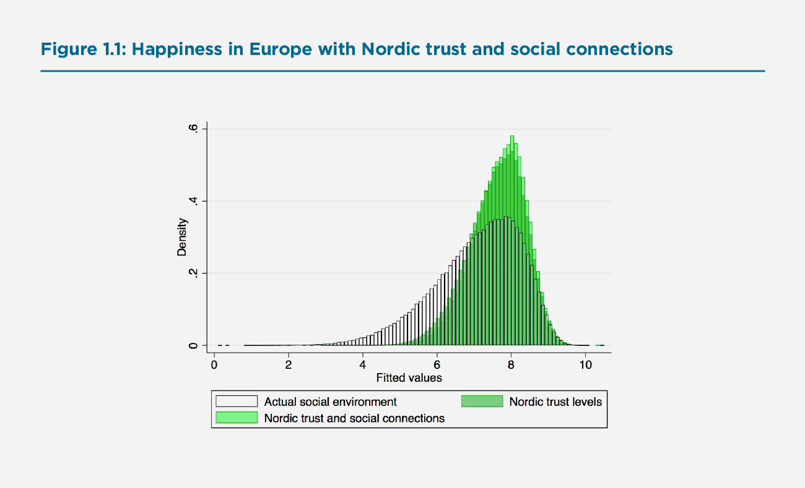
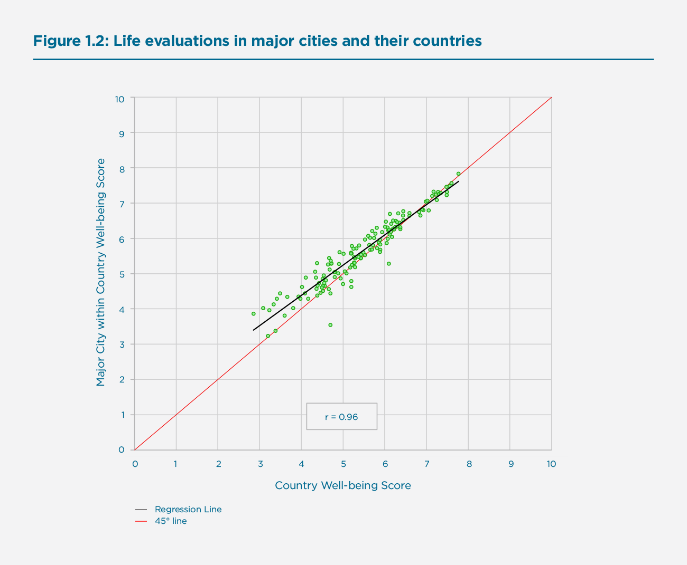

Environments for Happiness: An Overview
This year the World Happiness Report focuses especially on the environment – social, urban, and natural.
After presenting our usual country rankings and explanations of life evaluations in Chapter 2, we turn to these three categories of environment, and how they affect happiness.
The social environment is dealt with in detail in the later parts of Chapter 2. It is also a main focus of Chapter 7, which looks at happiness in the Nordic countries and finds that higher personal and institutional trust are key factors in explaining why life evaluations are so high in those countries.
Urban life is the focus of Chapter 3, which examines the happiness ranking of cities, and of Chapter 4, which compares happiness in cities and rural areas across the world. An Annex considers recent international efforts to develop common definitions of urban, peri-urban, and rural communities.
The natural environment is the focus of Chapter 5, which examines how the local environment affects happiness. Chapter 6 takes a longer and broader focus on the UN’s Sustainable Development Goals (SDGs). The wide range of the SDGs links them to all three of the environmental themes considered in other chapters.
In the rest of this Overview chapter, we synthesize the main findings relating to the three environmental themes. We then conclude with a brief summary of the individual chapters whose results are being reviewed here.
Social Environments for Happiness
In the first half of Chapter 2, six factors are used to explain happiness, and four of these measure different aspects of the social environment: having someone to count on, having a sense of freedom to make key life decisions, generosity, and trust. The second half of the chapter digs deeper, paying special attention first to the effects that inequality has on average happiness, and then on how a good social environment operates to reduce inequality. Just as life evaluations provide a broader measure of well-being than income does, inequality of well-being turns out to be more important than income inequality in explaining average levels of happiness. Well-being inequality significantly reduces average life evaluations, suggesting that people are happier to live in societies with less disparity in the quality of life.
The next step is to explore what determines well-being inequality, and to see how the effects of misfortune on happiness are moderated by the strength and warmth of the social fabric. Life evaluations are first explained at the individual level based on income, health, and a variety of measures of the quality of the social environment. Several particular risks are considered: ill-health, discrimination, low income, unemployment, separation, divorce or widowhood, and safety in the streets. The happiness costs of these risks are very large, especially for someone living in a low-trust social environment. For example, Marie, who is in good health, employed, married, with average income, sees herself as free from discrimination, and feels safe in the streets at night is estimated to have life satisfaction 3.5 points higher, on the 0 to 10 scale, than Helmut, who is in fair or worse health, unemployed, in the bottom-fifth of the income distribution, divorced, and afraid in the streets at night. This is the difference if they both live in a relatively low-trust environment. But if they both lived where trust in other people, government, and the police were relatively high, the well-being gap between them would shrink by one-third. The well-being costs of hardship are thus significantly less where there is a positive social environment within which one is more likely to find a helping hand and a friendly face. Since hardships are more prevalent among those at the bottom of the well-being ladder, a trusting social environment does most to raise the happiness of those in distress, and hence delivers greater equality of well-being.
A similar story emerges when we look at supports for well-being, which include the direct effects of social and institutional trust, high incomes, close social support and frequent meetings with friends. Let’s consider the example of Luigi, who is in the top-third of Europeans in terms of the trust he has in other people, government, and the police, meets socially with friends weekly or more, has at least one person with whom to discuss intimate problems, and is in the top fifth of the distribution of household income. He has a happiness level 1.8 points higher than Klara, who lives in a low trust environment with weak social ties. This gap is reduced by one-fifth when we take account of the fact that the advantages of higher income and close personal social supports are less significant in an environment of generally high social trust.
This new evidence of the power of an environment to raise average life quality and to reduce inequality can be used to illustrate the analysis of Chapter 7, which explains the higher happiness of the Nordic countries largely in terms of the high quality, often hard-won, of their local and national social environments. We can illustrate this by comparing the distribution of happiness among 375,000 individual Europeans in 35 countries with what it would be if all countries had the same average levels of social trust, trust in institutions, and social connections as are found in the Nordic countries. The new distribution does not change anyone’s health, income, employment, family status, or neighbourhood safety, all of which are more favourable, on average, in the Nordic countries than in the rest of Europe. In Figure 1.1 we simply increase each person’s levels of trust and social connections to the average of those living in the Nordic countries, to give some idea of the power of a good social environment to raise the average level and lower the inequality of well-being.
Figure 1.1: Happiness in Europe with Nordic trust and social connections

The results shown in Figure 1.1 are striking. The current European distribution of happiness (shown in black and white, with a mean value of 7.09) shifts significantly, with a higher mean and with much less inequality if the trust and social connection levels of the Nordic countries existed across all of Europe (as shown in two-tone green, with a mean value of 7.68). The darker green bars show the effects of the trust increases on their own, while the lighter green bars show what is added by having Nordic levels of social connections. The trust increases alone are sufficient to raise average life evaluations by 0.50 points (to 7.59), thereby accounting for more than half the amount by which actual life satisfaction in the Nordic countries (=8.05) exceeds than of Europe as a whole. The Nordic social connections add another 0.09 points. Together the changes in trust and social connections explain 60% of the happiness gap between the Nordic countries and Europe as a whole. Although close social connections are very important, they are only modestly more prevalent in the Nordic countries than elsewhere in Europe. It is the higher levels of social and institutional trust that are especially important in raising happiness and reducing inequality.
Urban Happiness
This Report marks the first time that we have looked at the happiness of city life across the world, both comparing cities with other cities and looking at how happy city dwellers are, on average, compared to others living in the same country. The results are contained in the city rankings of Chapter 3, the urban/rural happiness comparisons of Chapter 4, and an Annex presenting and making use of new urban definitions from the EU and other international partners. There are several striking findings in the two chapters, as illustrated by Figure 1.2. The figure plots the average life evaluations of city dwellers in 138 countries against average life evaluations in the country as a whole, in both cases measured using all available Gallup World Poll responses for 2014-2018.
Figure 1.2: Life evaluations in major cities and their countriesons

Three key facts are immediately apparent from Figure 1.2, all of which are amplified and explained in the chapters on urban life. First, city rankings and country rankings are essentially identical. Second, in most countries, especially at lower levels of average national happiness, city dwellers are happier than those living outside cities by about 0.2 points on the life evaluation scale running from 0 to 10. Third, the urban happiness advantage is less and sometimes negative in countries at the top of the happiness distribution. This is shown by the regression line in Figure 1.2.
If the ranking of city-level life evaluations mimics that of the countries in which they are located, then we would expect cities from the same country to be clustered together in the city rankings. This is indeed what we find. For example, the 10 large US cities included in the cities ranking all fall between positions 18 and 31 in the list of 186 cities. The fact that two Swedish cities, Stockholm and Göteborg, differ by fifteen places in the rankings, 9 for Stockholm and 24 for Göteborg, might suggest a large gap between two cities in the same country. But they lie within the same statistical confidence region, partly because of the number of similarly scoring US cities lying between Göteborg and Stockholm in the rankings, and partly because of the small samples available for cities outside the United States.
The urban/rural chapter pays special attention to the declining urban advantage as development proceeds and lists a number of contributing factors. Their key Figure 4.3 actually shows average urban happiness falling below average rural happiness after some level of economic development. In most regions of the world, the higher levels of happiness in cities can be explained by better economic circumstances and opportunities in cities. Although in a number of the richer countries the rural population is happier than its urban counterpart, cities that combine higher income with high levels of trust and connectedness are less likely to have their life evaluations fall below the national average as they become richer. In the relatively few countries with detailed data on life satisfaction of communities of all sizes, and where rural communities are happier than major urban centres, the key factor correlated with the rural advantage in average life evaluations is the extent to which people feel a sense of belonging to their local community. Another factor is inequality of happiness, which is more prevalent in urban communities. For example, in Canada, life evaluations are 0.18 points higher in rural neighbourhoods than in urban ones.[1] This gap is halved if community belonging is maintained, or reduced to one-third if well-being inequality is also maintained at the levels of the rural communities.[2] Thus the social environments discussed above seem also to be important in explaining differences in happiness between urban and rural communities.
Sustainable Natural Environments
The natural environment is the focus of both Chapters 5 and 6. Chapter 5 starts by noting the widespread surge in interest in protecting the natural environment, supported by Gallup World Poll data showing widespread public concern about the environment. The chapter then presents two sorts of evidence, the first international and the second local and immediate. For the first, the chapter assesses how national average densities of various pollutants and different aspects of the climate and land cover affect average life evaluations in those OECD countries where data on these measures are recorded. Treating a number of pollutants separately, the authors find significant negative effects on life evaluations from several air-borne pollutants (shown in Figure 5.2a and 5.2b), with fairly similar effects on positive affect, but none on negative affect. Forests have significant positive effects on life evaluations, but none on emotions. The chapter also shows some small but significant preference for more moderate temperatures, especially in rural areas.
The second strand of the evidence shifts from national data to very local experiences of a sample of 13,000 volunteers in greater London whose phones reported their locations when they were asked on half a million occasions to report their emotional states, what they were doing, and with whom they were doing it. These answers were than collated with detailed environmental data for the time and location of each response. These data included closeness to rivers, lakes, canals and greenspaces, air quality and noise levels, and weather conditions. The activities included work, walking, sports, gardening, and birdwatching, in all cases in comparison with being sedentary at home. Nearby public parks and trees in the streets, as well as closeness to the River Thames or a canal, spurred positive moods. Mood appeared unaffected by local concentrations of particulate matter PM10, while NO2 concentrations had a modest negative impact only in certain model specifications. Weather had an effect on emotional state, with better moods in sunshine, clear skies, light winds, and warm temperatures. Moods were better outdoors than indoors, and worse at work. As for other activities, many were accompanied by significant changes in moods. Moods rather than life evaluations are used for these very short-term reports, since life evaluations tend to be stable under such temporary changes, although, as shown in Chapter 2, accumulated positive moods contribute to higher life evaluations.
Supplementary material in the on-line appendix to Chapter 5 links activities directly to the social environment, using a large sample of 2.3 million responses in the United Kingdom. All of the 43 listed activities improve moods when done with a friend or partner. For example, to hike or walk alone raises mood by 2%, while a shared walk raises mood by much more, by 7.5% with a friend or 8.9% with a partner. Activities that normally worsen moods can induce happiness when done in the company of a friend or partner. Commuting or traveling, activities that on average worsen mood levels (-1.9%) are happiness-inducing when shared with friends or partners, with mood up 5.3% for a trip shared with a friend, or 3.9% with a partner. Even waiting or queueing, a significant negative when done alone (-3.5%) becomes a net positive when the experience is done with the company of a friend (+3.5%). These estimated effects may be exaggerated when friends are normally not invited along for unpleasant queues or trips. But they may be underestimated for those who want a friend or partner along to help them deal with waits for bad news at the doctor’s office or long queues at the airport. Even taken with a grain of salt, these are large effects. These snapshots from the daily lives of UK residents confirm what much other research has shown, namely that experiences make people happier when they are shared with others.
Chapter 6 moves from the more immediate natural environment to the broader long-term environment, mainly by testing the linkages between the Sustainable Development Goals (SDGs) and people’s current life evaluations. The chapter makes the general case for using life evaluations as a way of providing an umbrella measure of well-being likely to be improved by achieving progress towards the SDG targets. The goals themselves came from quite diverse attempts to set measurable standards for natural environmental quality and the quality of life, but there is a strong case for some overarching measure to help evaluate the importance of each separate SDG.
The primary empirical finding of Chapter 6 is that international differences in reaching the SDGs are positively and strongly correlated with international differences in life evaluations, with goal attainment rising even faster among the happiest countries, which implies increasing marginal returns to sustainable development in terms of happiness. However, unpacking the SDGs by looking at how each SDG relates to life evaluations—as well as how these relationships play out by region—reveals much heterogeneity. For example, SDG 12 (responsible consumption and production) and SDG 13 (climate action) are negatively correlated with life evaluations, a finding which holds for SDG 12 even when controlling for general level of economic development. These insights suggest that more complex and contextualized policy efforts are needed to chart a course towards environmentally sustainable growth that also delivers high levels of human well-being.
Generally, what might make achievement of the SDGs so closely match overall life evaluations? Part of the reason, of course, is that many of the specific goals cover the same elements, e.g. good health and good governance, that have been pillars in almost all attempts to understand what makes some nations happier than others. However, there is a deeper set of reasons that may help to explain why actions to achieve long-term sustainability are more prevalent among the happier countries. As shown in Chapter 7 on Nordic happiness, and earlier in this synthesis, people are happier when they trust each other and their shared institutions, and care about the welfare of others. Such caring attitudes are then typically extended to cover those elsewhere in the world and in future generations. This trust also increases social and political support for actions to help secure the futures of those in other countries and future generations. Thus, actions required to achieve the longer-term sustainable development goals are more likely to be met in those countries that have higher levels of social and institutional trust. But these are the countries that already rank highest in the overall rankings of life evaluations, so it is not surprising that actual attainment of SDG targets, and political support for those objectives, is especially high in the happiest countries, as is shown in Chapter 6. The same social connections that favour current happiness are also likely to support actions to improve the quality and security of the environment for future generations.
To re-cap, the structure of the chapters to follow is:
- Chapter 2 starts with the usual national rankings of recent life evaluations, and their changes from a 2008-2012 base period to 2017-2019. The sources of these levels and changes are investigated, with the six key factors being supplemented by an analysis of how well-being inequality is linked to lower average levels of happiness. Then the chapter turns to show the importance of social environments with special emphasis on trust and social connections and the ability of high trust to improve life evaluations for all, but especially those who are most at risk by lessening the well-being costs of discrimination, unemployment, illness, and low income.
- Chapter 3 provides a ranking of happiness measures, including both life evaluations and measures of positive and negative affect for 186 global cities for which there are samples of sufficient size from the Gallup World Poll.
- Chapter 4 digs deeper into the relative happiness of urban and rural life around the world, showing city dwellers to be generally happier than rural dwellers in most countries, with these advantages being less, and sometimes reversed, in a number of the richer countries.
- Chapter 5 examines how different aspects of the natural environment influence subjective well-being. The first part of the chapter does this using natural environmental data for OECD countries combined with happiness measures from the Gallup World Poll, while the second part uses data collected from just-in-time reports from a sample of Londoners, seeing how their emotions change with their activities and features of the local environment surrounding them.
- Chapter 6 studies the empirical relationships between the Sustainable Development Goals (SDGs) and happiness measures from the Gallup World Poll, mainly the life evaluations that are the focus of earlier chapters.
- Chapter 7 describes several features of life in the Nordic countries that help to explain why life evaluations in those countries are very high. The chapter also discounts several other proposed explanations that are not supported by the evidence.
- The Annex presents new data based on standardized definitions of urban, peri-urban, and rural populations and uses them to compare happiness, generally finding happiness highest in the cities and lowest in rural areas for their sample of countries.
References
Helliwell, J. F., Shiplett, H., & Barrington-Leigh, C. P. (2019). How happy are your neighbours? Variation in life satisfaction among 1200 Canadian neighbourhoods and communities. PloS one, 14(1).
Endnotes
When roughly 400,000 life satisfaction observations, on the 0 to 10 scale, from several years of Canadian Community Health Surveys were divided among 1200 contiguous communities spanning the whole of Canada, they showed average life satisfaction in the roughly 800 urban communities to be 0.18 points lower (p<.001) than for the 400 rural communities (Helliwell et al 2019). The average reported level of community belonging was 0.692 in the urban neighbourhoods and 0.782 in the rural ones (p<.001 for the difference). Inequality of life satisfaction was greater in the urban neighbourhoods (SD=0.086 urban vs 0.080 rural, p<.001). Average census-based household income, by contrast, was significantly higher in the urban than in the rural communities, roughly $C84,000 vs $C69,000. ↩︎
A regression of life satisfaction on the rural community identifier shows life satisfaction to be 0.175 (t=14.0) higher in the rural communities. When each community’s average sense of community belonging is added to the equation (coeff 0.882, t=10.8), the coefficient on the rural dummy drops to 0.095 (t=6.7). Subsequently, adding the community level of life satisfaction inequality, as measured by the standard error (coefficient=-5.93, t=16.3) lowers the rural coefficient further (to 0.061, t=4.7), illustrating that higher community belonging and lower inequality in the rural communities together account for most of the life satisfaction difference. ↩︎